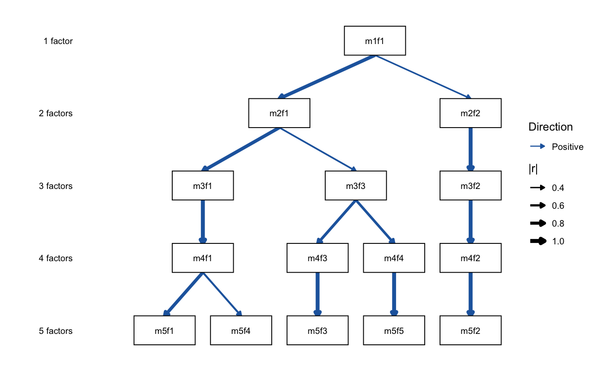

Bass-ackwards hierarchical structural analysis in R
ackwards implements Goldberg’s (2006) bass-ackwards method and its modern extensions for mapping the hierarchical structure of multivariate data.
The core insight is simple: instead of asking how many factors best describe your data, ask how the solutions at different levels of resolution are related to one another. A 1-factor solution captures the broadest shared variance; a 5-factor solution captures narrower, more specific dimensions. Bass-ackwards analysis traces how broad factors split into narrow ones — and which narrow factors are redundant re-combinations of broader ones.
The package supports three extraction engines (PCA, EFA, ESEM) and polychoric correlations for ordinal data. Beyond fitting, it is a full analysis toolkit: suggest_k() brackets the plausible depth, comparability() gates that depth on split-half replicability, Forbes’s (2023) prune() flags redundant or artifactual factors from the skip-level connections, boot_edges() puts bootstrap confidence intervals on every edge, and predict() scores new observations out of sample.
Installation
Install the released version from CRAN:
install.packages("ackwards")Or the development version from GitHub:
# install.packages("pak")
pak::pak("jmgirard/ackwards")Quick start
We use bfi25, the built-in 25-item Big Five example dataset (see ?bfi25 for provenance). Because its items are recorded on a 6-point ordinal scale, we set cor = "polychoric", and we fit the dataset directly (rather than na.omit()-ing it first) so its built-in IPIP item labels flow through to top_items().
Step 1 — Suggest a range of k
suggest_k() runs five complementary criteria — two forms of parallel analysis (PC and FA basis), MAP, VSS, and optionally Comparison Data — to help you choose an upper bound for the hierarchy depth.
sk
#>
#> ── Factor / Component Count Suggestion (ackwards) ──────────────────────────────
#> Variables: 25
#> n: 1,000
#> Basis: pearson
#> Tested k: 1-8
#>
#> ── Criteria (k = 1-8) ──
#>
#> k = 1: PA-PC ✔ PA-FA ✔ MAP 0.0246 VSS-1 0.5121 VSS-2 0.0000 CD ✔
#> k = 2: PA-PC ✔ PA-FA ✔ MAP 0.0190 VSS-1 0.5761 VSS-2 0.6636 CD ✔
#> k = 3: PA-PC ✔ PA-FA ✔ MAP 0.0172 VSS-1 0.5969 VSS-2 0.7288 CD ✔
#> k = 4: PA-PC ✔ PA-FA ✔ MAP 0.0164 VSS-1 0.6198* VSS-2 0.7781 CD ✔
#> k = 5: PA-PC ✔ PA-FA ✔ MAP 0.0160* VSS-1 0.5730 VSS-2 0.7912* CD ✔
#> k = 6: PA-PC - PA-FA ✔ MAP 0.0170 VSS-1 0.5592 VSS-2 0.7530 CD ✔
#> k = 7: PA-PC - PA-FA - MAP 0.0201 VSS-1 0.5698 VSS-2 0.7290 CD ✔
#> k = 8: PA-PC - PA-FA - MAP 0.0231 VSS-1 0.5615 VSS-2 0.7252 CD ✔*
#>
#> ── Recommendations ──
#>
#> • PA-PC: k <= 5
#> • PA-FA: k <= 6
#> • MAP: k = 5
#> • VSS-1: k = 4
#> • VSS-2: k = 5
#> • CD: k = 8
#> Consensus range: k = 4-8
#> ────────────────────────────────────────────────────────────────────────────────
#> Note: k_max in ackwards() is a maximum depth. Setting k_max one or two levels
#> above the consensus to observe factor fragmentation is intentional.
#> Caution: PA-PC tends to overextract; structures may not replicate (Forbes,
#> 2023). PA-FA and CD are more conservative. Use the range.The criteria converge on a consensus range that covers k = 5, consistent with the known Big Five structure of this instrument.
Step 2 — Fit the hierarchy
ackwards() fits factor models at every level from 1 to k_max and computes the between-level factor-score correlations that define the hierarchy.
x <- ackwards(bfi25, k_max = 5, cor = "polychoric", missing = "listwise")
x
#>
#> ── Bass-Ackwards Analysis (ackwards) ───────────────────────────────────────────
#> Engine: pca
#> Rotation: varimax
#> Basis: polychoric
#> n: 875
#> k (max): 5
#>
#> ── Levels ──
#>
#> ✔ k = 1: 1 factor, 23.2% variance
#> ✔ k = 2: 2 factors, 35.5% variance
#> ✔ k = 3: 3 factors, 44.6% variance
#> ✔ k = 4: 4 factors, 52.2% variance
#> ✔ k = 5: 5 factors, 58.4% variance
#>
#> ── Edges ──
#>
#> 14 of 40 edges have |r| ≥ 0.3
#> ────────────────────────────────────────────────────────────────────────────────
#> Note: This is a series of linked solutions, not a fitted hierarchical model.
#> Cross-level edges are descriptive score correlations. Per-level fit indices
#> (EFA/ESEM) describe how well a k-factor model fits the items at that level --
#> they do not validate the edges or the hierarchy itself.Step 3 — Visualize
autoplot() draws the hierarchical diagram. Each row is a level (k = 1 at top, k = 5 at bottom); arrows connect each narrow factor to the broad factor it inherits from, with thickness encoding |r| and colour encoding sign (both legended). The visualization vignette covers the encodings, direction = "horizontal", and the rest of the styling.
autoplot(x)
The five-factor level cleanly splits into the Big Five. The single broad factor at k = 1 (roughly general positive character) differentiates first into positive vs. negative affect (k = 2), then into successively narrower traits.
Step 4 — Interpret and score
top_items() lists each factor’s salient items — printed with bfi25’s built-in IPIP labels — so you can read what a factor means; augment() turns the hierarchy into factor scores for downstream analysis.
# What does each of the five factors mean? (salient items, |loading| >= 0.5)
top_items(x, level = 5, cut = 0.5)
#>
#> ── Salient items by factor (ackwards) ──────────────────────────────────────────
#> Engine: pca
#> Cut: |loading| >= 0.5
#> Top-n: all
#>
#> ── Level 5 (5 factors) ──
#>
#> m5f1
#> E2: Find it difficult to approach others [-0.752]
#> E4: Make friends easily [0.747]
#> E1: Don't talk a lot [-0.701]
#> E3: Know how to captivate people [0.677]
#> E5: Take charge [0.597]
#>
#> m5f2
#> N3: Have frequent mood swings [-0.825]
#> N1: Get angry easily [-0.810]
#> N2: Get irritated easily [-0.805]
#> N5: Panic easily [-0.688]
#> N4: Often feel blue [-0.646]
#>
#> m5f3
#> C2: Continue until everything is perfect [0.735]
#> C4: Do things in a half-way manner [-0.716]
#> C1: Am exacting in my work [0.690]
#> C3: Do things according to a plan [0.679]
#> C5: Waste my time [-0.652]
#>
#> m5f4
#> A1: Am indifferent to the feelings of others [-0.704]
#> A3: Know how to comfort others [0.703]
#> A2: Inquire about others' well-being [0.692]
#> A5: Make people feel at ease [0.580]
#> A4: Love children [0.522]
#>
#> m5f5
#> O5: Will not probe deeply into a subject [-0.705]
#> O3: Carry the conversation to a higher level [0.655]
#> O1: Am full of ideas [0.604]
#> O2: Avoid difficult reading material [-0.595]
#> O4: Spend time reflecting on things [0.551]
#> ────────────────────────────────────────────────────────────────────────────────
#> Loadings reflect primary-parent sign alignment. Use tidy(x, what = "loadings")
#> for the full matrix.Beyond the basics
A serious analysis rarely stops at one fit. Three verbs turn the hierarchy from a picture into a defensible result, and one scores new data:
-
comparability(bfi25, k_max = 6)gates hierarchy depth on split-half replicability — the deepest level at which every factor re-emerges in random halves of the sample (Everett 1983; Saucier et al. 2005). -
prune(x, "redundant")flags factors that persist across levels without differentiating — Forbes’s (2023) redundancy question. -
boot_edges(x, bfi25)attaches bootstrap confidence intervals to every between-level edge. -
predict(x, newdata)scores observations the model never saw, in the training metric — the standard cross-validation pattern.
The recommended-workflow vignette strings these into a six-step analysis.
Learn more
| Vignette | Topic |
|---|---|
| Introduction | The basics end-to-end: suggest_k → ackwards → summarize → plot → interpret → score |
| Recommended workflow | Replicability-gated hierarchies: gate depth on split-half comparability()
|
| Choosing k | Five criteria explained: pros/cons, bias direction, engine pairing |
| Forbes extension | Skip-level edges, redundancy pruning, pairs = "all"
|
| Engines & rotation | When to choose EFA or ESEM over PCA; convergence and loading comparison |
| Ordinal data | Polychoric correlations, attenuation bias, and WLSMV estimation |
| Interpreting & labeling |
top_items(), hierarchy-aware naming, label_template() round-trip |
| Visualization | Styling autoplot(): sign/magnitude encoding, layout orientation, labels, publication figures |
Citation
If you use ackwards in your research, please cite the package:
citation("ackwards")
#> To cite package 'ackwards' in publications use:
#>
#> Girard J (2026). _ackwards: Bass-Ackwards Hierarchical Structural
#> Analysis_. R package version 0.1.1,
#> <https://github.com/jmgirard/ackwards>.
#>
#> A BibTeX entry for LaTeX users is
#>
#> @Manual{,
#> title = {ackwards: Bass-Ackwards Hierarchical Structural Analysis},
#> author = {Jeffrey M. Girard},
#> year = {2026},
#> note = {R package version 0.1.1},
#> url = {https://github.com/jmgirard/ackwards},
#> }Please also cite the relevant method paper(s): Goldberg (2006) https://doi.org/10.1016/j.jrp.2006.01.001 for the bass-ackwards method itself, and Forbes (2023) https://doi.org/10.1037/met0000546 if you use the extended method (pairs = "all", redundancy/artifact pruning).